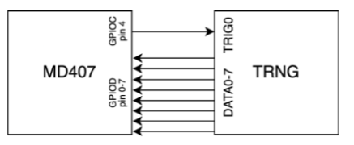
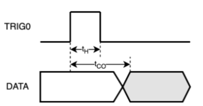
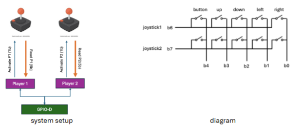
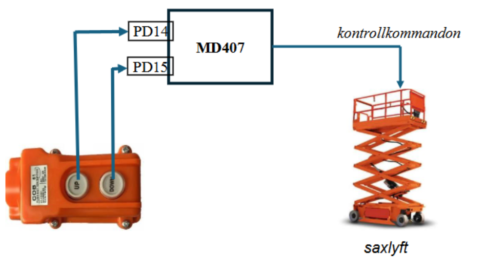

Följande deklarationer är givna som globala variabler i C:
unsigned short a = 2;
unsigned char b = 4;
short c;
int d[20];a) Vilket av följande alternativ är en korrekt assemblerdeklaration av variablerna? Om två eller fler alternativ är korrekta, välj det som använder minst minne. (–1 … 2 p)
| A | B | C | D |
|
|
|
|
| E | F | G | H |
|
|
|
|
Svar: G
a: .hword 2 deklarerar unsigned short (2
byte) med värdet 2 ✓b: .byte 4 deklarerar unsigned char (1
byte) med värdet 4 ✓.align 1 krävs innan c för att justera
till 2-byte-gräns (nödvändigt efter den 1 byte stora b)
✓c: .space 2 ger short (2 byte,
nollinitieras vilket är korrekt för en global variabel) ✓.align 2 och d: .space 80 ger
4-byte-justerad int[20] (20 × 4 = 80 byte) ✓Alternativ A saknar .align 1 före c →
c hamnar på en ojämn (feljusterad) adress. Alternativ D
initierar c till 2 med .hword 2, istället för
0. Alternativ G är det enda korrekta alternativet (och minst
minneskrävande bland korrekta).
Följande tilldelning skall göras:
d[a + b] = c;b) Vilket av följande alternativ är en korrekt
implementation av tilldelningen i RISC-V assembler?
(–1 … 2 p)
| A | B | C | D |
|
|
|
|
| E | F | G | H |
|
|
|
|
Svar: C
lhu t0, 0(t0) — laddar a (unsigned short)
med nollutvidgning ✓lbu t1, 0(t1) — laddar b (unsigned char)
med nollutvidgning ✓slli t0, t0, 2 — multiplicerar index med 4
(sizeof(int)) ✓lh t2, 0(t2) — laddar c (signed short) med
tecknutvidgning till 32 bit ✓sw t2, 0(t0) — lagrar 4 byte till
int-arrayen d ✓Alternativ A använder sh (lagrar bara 2 byte) istället
för sw för en int-array → fel. Alternativ G
använder lhu (unsigned) för c som är en
tecknad short → fel. Alternativ C är korrekt.
a) Följande C-funktion skall översättas till assembler:
int f(short a, short b) {
for(int i = 0; i <= a; i++) {
b = b + b;
}
return b;
}Vilket av följande alternativ är en korrekt implementation? (–1 … 3 p)
| A | B | C | D |
|
|
|
|
| E | F | G | H |
|
|
|
|
Svar: C (alternativt F – båda korrekta, samma antal instruktioner)
Loopondstillståndet i <= a i C-koden implementeras
med bgt t0, a0, r (hoppa ut om i > a).
Returvärdet är b (i a1), som måste kopieras
till a0 med mv a0, a1 innan
ret.
mv a0, a1 → returnerar fel
värde.bge (hoppar ut om
i >= a) → kör ett för få varv.blt (hoppar ut om
i < a) → kör ett för många varv.ble (vilken är bakvänd – loopen
körs aldrig) → fel.j l → ingen loop.b) Följande C-program skall översättas till assembler (RISC-V, RV32IMAC):
int g(int a, int b, int c, int d);
int f(int a, int b, int c, int d) {
return g(a, b, c, d) + g(d, b, c, a);
}Vilket av följande alternativ är en korrekt implementation av
funktionen f?
(Om två eller fler är korrekta, välj den med minst instruktioner.)
(–1 … 3 p)
| A | B | C | D |
|
|
|
|
| E | F | G | H |
|
|
|
|
Svar: H
Funktionen f anropar g två gånger. Inför
det andra anropet måste: 1. Returvärdet från första
g-anropet sparas (överlever nästa call) →
måste ligga i ett s-register (callee-saved). 2.
Originalt a0 (= argument a) måste sparas för
att skickas som a3 i andra anropet →
s-register. 3. ra måste sparas på stacken
(funktionen anropar i sin tur andra funktioner).
Alternativ G använder s0 för
originalvärdet på a0, men sparar första resultatet i
t0 – som skrivs över av det andra g-anropet →
fel.
Alternativ H använder s0 för
originalvärdet på a0 och s1 för första
resultatet. Båda är callee-saved och överlever det andra anropet. Det är
den enda lösning med korrekt registerhållning →
korrekt.
Alternativ B/E använder
t0/t1 som överskrivs av call g →
fel.
Funktionen apply_bit_mask(v, m) skall AND:a varje byte i
en integer v med byten m.
Den kallande funktionens värde på v skall uppdateras och
funktionen skall returnera antalet ändrade bitar.
Exempel:
Om masken m = 0b00001111 appliceras på värdet
v = 0xFFFFFFFF
skall värdet på v efter funktionsanropet vara
0x0F0F0F0F,
och funktionen skall returnera att 16 bitar ändrats.
Ni får anta att det finns en funktion som returnerar hur många bitar som skiljer sig mellan två integers:
int count_bit_diff (int a, int b);Välj den kod som korrekt implementerar det beskrivna beteendet.
| A | B |
|
|
| C | D |
|
|
| E | F |
|
|
Svar: C
v måste vara int * (pekare) för
att kunna modifiera originalet ✓char *cptr = (char*)v tolkar heltalet byte för byte
✓*(cptr + i) &= m AND:ar varje byte med masken
✓count_bit_diff(orig_v, *v) returnerar antal ändrade
bitar ✓&val ✓Alternativ A använder int *cptr och ökar med 4 byte per
iteration → går utanför variabeln. Alternativ B tar v som
värde, inte pekare → kan inte modifiera originalet. Alternativ C är
korrekt.
En 8-bitars slumpgeneratormodul (TRNG) är kopplad till GPIO-port C och D på en CH32V307 enligt följande skiss.

Vid positiv flank på ingången TRIG0 genererar TRNG-modulen ett 8-bitars slumpmässigt tal som läggs ut på dess utgångar DATA0-7. Modulen opererar enligt följande tidskrav:

tH = 23 mikrosekunder (kortaste tid som TRIG0 måste vara ‘1’)
tCO = 31 mikrosekunder (längsta tid från positiv flank på TRIG0 tills
det slumpmässiga talet har genererats)
a) Skriv en funktion delay_1us() som
med hjälp av SysTick åstadkommer en blockerande delay på 1
mikrosekund.
För full poäng skall du definiera och använda makrodefinitioner för SysTick-registren.
Antag att systemklockan är 144 MHz.
(4 p)
Vid 144 MHz ger 1 µs exakt 144 klockcykler. SysTick räknar uppåt och
sätter CNTIF i STK_SR när räknaren når
jämförelsevärdet STK_CMPLR.
#define STK_CTLR (*(volatile unsigned int*)0xE000F000)
#define STK_SR (*(volatile unsigned int*)0xE000F004)
#define STK_CNTL (*(volatile unsigned int*)0xE000F008)
#define STK_CMPLR (*(volatile unsigned int*)0xE000F010)
void delay_1us(void) {
STK_SR = 0; /* Nollställ CNTIF-flaggan */
STK_CNTL = 0; /* Nollställ räknaren */
STK_CMPLR = 143; /* 144 cykler - 1 = 143 */
/* INIT=1(bit5), STCLK=1(bit2), STE=1(bit0) = 0b100101 = 0x25 */
STK_CTLR = 0x25;
while (!(STK_SR & 1)); /* Vänta tills CNTIF sätts */
STK_CTLR = 0; /* Stäng av timern */
}STK_CTLR-bitarna: STE=1 (aktivera), STCLK=1 (använd HCLK = 144 MHz), INIT=1 (nollställ räknaren vid start), MODE=0 (räkna uppåt), STRE=0 (ingen auto-reload), STIE=0 (inget avbrott).
b) Skriv en funktion get_random_char()
som triggar slumpgeneratorn och därefter läser och returnerar det
slumpmässiga talet.
Funktionen måste ta hänsyn till tidskraven ovan.
Följande makrodefinitioner är givna:
#define GPIOC_OUTDR (*(volatile unsigned int*)0x4001100C)
#define GPIOD_INDR (*(volatile unsigned int*)0x40011408)Antag:
delay_1us() från a)GPIO Port C används även för att trigga andra enheter, på andra
pinnar, och du får inte påverka någon av dem.
(4 p)
tH = 23 µs (TRIG0 måste vara hög minst 23 µs). tCO = 31 µs (data klart senast 31 µs efter positiv flank).
Strategi: sätt TRIG0 hög → vänta tH → sätt TRIG0 låg → vänta återstående tid (tCO − tH = 8 µs) → läs data.
unsigned char get_random_char(void) {
/* Sätt bit 4 hög, påverka ej övriga pinnar */
GPIOC_OUTDR |= (1 << 4);
/* Vänta minst tH = 23 µs */
for (int i = 0; i < 23; i++) delay_1us();
/* Sänk TRIG0 */
GPIOC_OUTDR &= ~(1 << 4);
/* Vänta tCO - tH = 31 - 23 = 8 µs till (data garanterat klart) */
for (int i = 0; i < 8; i++) delay_1us();
/* Läs DATA0-7 från bit 0-7 på GPIOD */
return (unsigned char)(GPIOD_INDR & 0xFF);
}|= och &= ~ används för att inte störa
övriga pinnar på Port C.
c) Antag att CH32V307 är kopplad till två knappar:
Interrupt-prioriteterna är konfigurerade i PFIC_IPRIOR-registren, och den röda knappen har högre prioritet än den blå.
Vad händer om någon trycker på den blå knappen medan den röda knappens interrupthanterare körs? (1 p)
Vad händer om någon trycker på den röda knappen medan den blå knappens interrupthanterare körs? (1 p)
Blå knapp trycks under röd knapps
interrupthanterare:
Den blå knappen har lägre prioritet än den röda. Den röda hanteraren
körs utan att avbrytas. Det blå avbrottet markeras som pending
i PFIC och körs efter att den röda hanteraren avslutas
med mret.
Röd knapp trycks under blå knapps
interrupthanterare:
Den röda knappen har högre prioritet. Processorn avbryter (preemptar)
den blå hanteraren, sparar tillståndet och hoppar till den röda
knapprens hanterare. När den röda hanteraren avslutas med
mret återupptas den blå hanteraren från den punkt där den
avbröts.
Vi vill använda CH32V307 som kärnan för en spelkonsol.
Vi vill stödja två spelare, som båda har en inmatningsenhet (joystick)
som kan flyttas upp, ner, vänster och höger, och som har en extra
tryckknapp.

Systemet är kopplat till GPIO Port D.
Följande datatyper är givna:
typedef enum {on, off} type_button;
typedef enum {none, up, down, left, right} type_move;
typedef struct {
type_move move;
type_button button;
} type_player_input;
typedef struct {
int x;
int y;
} type_player_position;Implementera ditt program i C och följ stegen nedan:
a) Definiera en struct som representerar en GPIO-port enligt CH32V307:s registerlayout. Visa sedan hur man refererar till CFGLR-registret i Port D med hjälp av denna struct. (2 p)
Om du väljer att inte göra uppgift a) måste du visa korrekta makrodefinitioner för de register du använder i följande uppgifter.
CH32V307 GPIO-registerlayout (offset från basadress):
| Offset | Register |
|---|---|
| 0x00 | CFGLR |
| 0x04 | CFGHR |
| 0x08 | INDR |
| 0x0C | OUTDR |
| 0x10 | BSHR |
| 0x14 | BCR |
| 0x18 | LCKR |
typedef struct {
volatile unsigned int CFGLR;
volatile unsigned int CFGHR;
volatile unsigned int INDR;
volatile unsigned int OUTDR;
volatile unsigned int BSHR;
volatile unsigned int BCR;
volatile unsigned int LCKR;
} GPIO_t;
#define GPIOD ((GPIO_t *)0x40011400)Referens till CFGLR i Port D: GPIOD->CFGLR
b) Skriv en funktion
void init_port(void);där du gör de initialiseringar som behövs för att Port D skall fungera enligt beskrivningen ovan.
Antag:
(2 p)
Från kopplingsschemat: - b0–b4: delade ingångar (right=b0, left=b1, down=b2, up=b3, button=b4) → input pull-up - b5: ej använd, påverkas ej - b6: radvalsutgång för joystick 1 → open-drain output - b7: radvalsutgång för joystick 2 → open-drain output
Konfigurationsvärden per pinne i CFGLR (CNF[3:2], MODE[1:0]): - Input
pull-up: CNF=10, MODE=00 → 0x8 -
Open-drain 2MHz: CNF=01, MODE=10 →
0x6
CFGLR-bitar: [3:0]=pin0, [7:4]=pin1, …, [31:28]=pin7.
void init_port(void) {
/* Mask: ändra pinnar 0–4 (bits 19:0) och 6–7 (bits 31:24),
lämna pin 5 (bits 23:20) orörd */
GPIOD->CFGLR = (GPIOD->CFGLR & 0x00F00000)
| 0x66088888;
/* bits[31:28] = 0x6 (pin7, open-drain)
bits[27:24] = 0x6 (pin6, open-drain)
bits[23:20] = behålls från original
bits[19:16] = 0x8 (pin4, input pull-up)
bits[15:12] = 0x8 (pin3)
bits[11:8] = 0x8 (pin2)
bits[7:4] = 0x8 (pin1)
bits[3:0] = 0x8 (pin0) */
/* Aktivera pull-up för ingångarna (b0–b4): sätt ODR-bitar till 1 */
GPIOD->OUTDR |= 0x1F;
/* Sätt radvalsutgångarna inaktiva (höga = öppen, ingen rad vald) */
GPIOD->OUTDR |= (1 << 6) | (1 << 7);
}c) Skriv en funktion
int read_player_input(int pnum, type_player_input *pinput);som läser av den joystick som anges av parametern pnum
(1 eller 2) och sparar resultatet i strukturen pinput.
Funktionen skall returnera:
(4 p)
Det är ett matrisupplägg: b6/b7 väljer rad (active-low), b0–b4 är delade kolumningångar (active-low med pull-up).
För att läsa spelare pnum: aktivera dess rad genom att
dra b6 (P1) eller b7 (P2) låg, avaktivera den andra, läs sedan
b0–b4.
int read_player_input(int pnum, type_player_input *pinput) {
/* Aktivera rätt rad (active-low), avaktivera den andra */
if (pnum == 1) {
GPIOD->OUTDR &= ~(1 << 6); /* b6 låg → joystick 1 aktiv */
GPIOD->OUTDR |= (1 << 7); /* b7 hög → joystick 2 inaktiv */
} else {
GPIOD->OUTDR &= ~(1 << 7); /* b7 låg → joystick 2 aktiv */
GPIOD->OUTDR |= (1 << 6); /* b6 hög → joystick 1 inaktiv */
}
unsigned int indr = GPIOD->INDR;
/* Avaktivera båda rader efter läsning */
GPIOD->OUTDR |= (1 << 6) | (1 << 7);
/* Active-low: 0 = tryckt/aktiv */
type_move move = none;
if (!(indr & (1 << 3))) move = up;
else if (!(indr & (1 << 2))) move = down;
else if (!(indr & (1 << 1))) move = left;
else if (!(indr & (1 << 0))) move = right;
type_button button = (indr & (1 << 4)) ? off : on;
pinput->move = move;
pinput->button = button;
return (move != none || button == on) ? 1 : 0;
}d) Skriv en funktion
void update_player_position(type_player_input *pinput,
type_player_position *player);som tar in en struktur med spelarens input och använder den för att uppdatera spelarens position.
Varje gång en riktningssignal (up/down/left/right) är aktiv skall respektive koordinat ökas eller minskas med 1.
(1 p)
void update_player_position(type_player_input *pinput,
type_player_position *player) {
if (pinput->move == up) player->y++;
if (pinput->move == down) player->y--;
if (pinput->move == left) player->x--;
if (pinput->move == right) player->x++;
}e) Skriv en huvudfunktion
int main(void);som:
init_port()read_player_input()update_player_position()Krav:
{0, 0}{none, off}(2 p)
int main(void) {
type_player_position pos1 = {0, 0};
type_player_position pos2 = {0, 0};
type_player_input input1 = {none, off};
type_player_input input2 = {none, off};
init_port();
while (1) {
read_player_input(1, &input1);
read_player_input(2, &input2);
update_player_position(&input1, &pos1);
update_player_position(&input2, &pos2);
}
return 0;
}f) Spelkonsollen är också kopplad till en TV och
chefen vill att anrop till printf skall skrivas ut på
TV:n.
Vilket bibliotek behöver ändras för att detta skall fungera?
Alternativ:
Motivera kort ditt svar.
(1 p)
C standardbiblioteket.
printf är definierad i C-standardbiblioteket (t.ex.
newlib/newlib-nano). Internt anropar printf till slut en
lågnivåfunktion _write() (en s.k. syscall stub)
som skickar tecken till en utdataenhet. På en inbyggd plattform utan
operativsystem måste man tillhandahålla en egen implementation av
_write() – detta kallas retargeting. Det är alltså
C-standardbibliotekets I/O-lager som behöver anpassas för att omdirigera
utdata till TV:n.
Runtimebiblioteket hanterar uppstart/nedstängning,
kompilatorbiblioteket intrinsics och matematikoperationer – ingen av dem
hanterar printf-utdata.
move_up(), move_down() och
stop(). Du kan anta att dessa funktioner redan är
implementerade.

Två fjäderbelastade knappar UP och DOWN är anslutna till stiften PD14 respektive PD15 på CH32V307-kortet. När respektive knapp trycks in ställs det anslutna stiftet till ‘1’. När knappen inte är nedtryckt är signalen flytande. Målet med denna uppgift är att konfigurera avbrott för stift PD14 respektive PD15, så att avbrott genereras när knapparna trycks ned eller släpps upp.
Antag att ingen av knapparna är nedtryckt och att saxlyften inte rör
sig när programmet startar. Avbrottshanteraren skall anropa
move_up() funktionen om UP-knappen trycks ned och
DOWN-knappen ej är nedtryckt. På samma sätt skall avbrottshanteraren
anropa move_down() funktionen om DOWN-knappen trycks ned
och UP-knappen ej är nedtryckt. Saxlyften får inte röra sig när båda
knapparna är nedtryckta, eller när ingen av knapparna är nedtryckta.
Avbrottshanteraren skall anropa stop() funktionen för att
stoppa saxlyftens rörelse.
För resten av denna uppgift kan du anta att korrekt typkonverterade makrodefinitioner för pekare till alla register för GPIO, AFIO, EXTI och PFIC-moduler redan är givna med namnkonventioner enligt QuickGuide.
a) Pinnarna PD14 och PD15 skall ställas in som ingångar med pull-down motstånd. Visa hur detta kan uppnås, med hjälp av makrodefinitionerna, utan att påverka inställningarna för de andra stiften. (2p)
PD14 och PD15 konfigureras i GPIOD_CFGHR (pinnar 8–15).
Varje pinne tar 4 bitar: - Input pull-up/pull-down: CNF=10,
MODE=00 → 0x8 per pinne - Sätt ODR-biten till
0 → aktiverar pull-down
Pin 14 sitter i bits [27:24], pin 15 i bits [31:28] av CFGHR.
/* Konfigurera PD14 och PD15 som input pull-down, lämna övriga orörda */
GPIOD_CFGHR = (GPIOD_CFGHR & ~0xFF000000)
| 0x88000000; /* 0x8 för pin15, 0x8 för pin14 */
/* ODR-bitar 14 och 15 = 0 → pull-down */
GPIOD_OUTDR &= ~((1 << 14) | (1 << 15));b) Visa hur AFIO konfigureras så att PD14 och PD15 kopplas till EXTI-modulen i CH32V307. Tänk på att bara PD14 och PD15 ska konfigureras och att övriga EXTI-linor inte skall påverkas. (2p)
AFIO_EXTICR4 (offset 0x14 från AFIO-bas 0x40010000) väljer vilken
port som driver EXTI12–15. Varje linje tar 4 bitar, Port D =
0x3.
0x30x3/* Koppla EXTI14 och EXTI15 till Port D, lämna EXTI12/13 orörda */
AFIO_EXTICR4 = (AFIO_EXTICR4 & ~0x0000FF00)
| (0x3 << 8) /* EXTI14 → Port D */
| (0x3 << 12); /* EXTI15 → Port D */c) Visa hur EXTI och PFIC konfigureras så att avbrott genereras på både positiv och negativ flank för de två pinnarna. (3p)
EXTI-konfiguration (bas 0x40010400):
EXTI_INTENR: aktivera avbrottsmask för linje 14 och
15EXTI_RTENR: aktivera stigande flankEXTI_FTENR: aktivera fallande flankEXTI_INTENR |= (1 << 14) | (1 << 15); /* Aktivera interrupt-mask */
EXTI_RTENR |= (1 << 14) | (1 << 15); /* Trigga på positiv (stigande) flank */
EXTI_FTENR |= (1 << 14) | (1 << 15); /* Trigga på negativ (fallande) flank */PFIC-konfiguration (bas 0xE000E000):
PD14/PD15 delar IRQ-nummer 56 (EXTI15_10, se vektortabellen). IRQ 56 → PFIC_IENR2 (täcker IRQ 32–63), bit 56 − 32 = 24.
PFIC_IENR2 |= (1 << 24); /* Aktivera IRQ 56 (EXTI15_10) i PFIC */d) Implementera avbrottshanteraren
void at_irq(void) så att saxlyften kontrolleras som
beskrivet ovan. (3p)
void at_irq(void) {
/* Läs av PD14 (UP) och PD15 (DOWN) */
int up = (GPIOD_INDR >> 14) & 1;
int down = (GPIOD_INDR >> 15) & 1;
if (up && !down) {
move_up();
} else if (down && !up) {
move_down();
} else {
/* Båda nedtryckta eller ingen nedtryckt */
stop();
}
/* Kvittera avbrottet (skriv 1 för att nollställa flaggan) */
EXTI_INTFR = (1 << 14) | (1 << 15);
}e) Nedanstående assemblyfil är given. Visa hur
avbrottsvektorn för at_irq initieras i vektortabellen, och
hur mtvec ställs in, under antagandet att systemet använder
vektorat läge (mode 01). (1p)
.extern at_irq
.section .data
vector_table:
# fyll i här
.section .text
init_interrupts:
# fyll i här
retI vektorat läge (mode 01) hoppar processorn till
mtvec_BASE + 4 × cause vid ett avbrott. EXTI15_10 har
IRQ-nummer 56, så hopp-instruktionen placeras på offset
56 × 4 = 0xE0 från vector_table.
mtvec ställs in på adressen till
vector_table med de två lägsta bitarna satta till
01.
.extern at_irq
.section .data
vector_table:
.org vector_table + 56 * 4 # Hoppa till rätt plats för IRQ 56 (EXTI15_10)
j at_irq
.section .text
init_interrupts:
la t0, vector_table
ori t0, t0, 1 # Sätt mode = 01 (vektorat läge)
csrw mtvec, t0
retf) För att spara pengar skulle man vilja att signalerna från UP och DOWN knappen gick över en enda ledning, men man har hittills inte kommit på hur man skall kunna synkronisera kommunikationen. Nämn ett av de protokoll vi pratat om i kursen som kan användas för seriekommunikation utan klocksignal. (1p)
UART (Universal Asynchronous Receiver/Transmitter) — asynkron kommunikation där sändare och mottagare är överens om baudrate i förväg. Ingen separat klocklinje behövs.